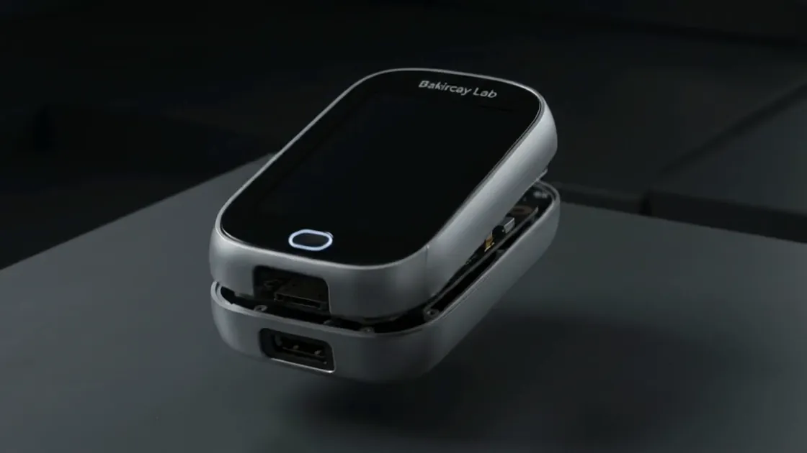
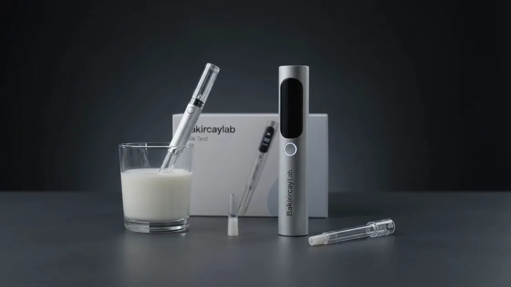

Stres takibi
Saliva örneğiyle stres ölçümünü herkes için erişilebilir kılmayı hedefliyoruz.
Saliva temelli stres takibi ve sütte antibiyotik kalıntılarının yerinde taranması için taşınabilir sensör sistemleri geliştiriyoruz.
Bakırçay Lab bünyesinde geliştirdiğimiz çalışmalar.

Saliva örneğiyle stres ölçümünü herkes için erişilebilir kılmayı hedefliyoruz.

Tetrasiklin gibi antibiyotik kalıntılarının süt numunelerinde yerinde taranmasına yönelik, kompakt ve taşınabilir bir sensör sistemi geliştiriyoruz.
Pipet biçimindeki cihaz konseptimiz, tek kullanımlık numune ucunu tekrar kullanılabilen bir elektronik okuyucuyla birleştiriyor.
Kalibrasyon, seçicilik ve tekrarlanabilirlik çalışmalarıyla ölçüm yaklaşımının doğrulanması hedeflenmektedir.
Saliva temelli stres takibi ve sütte antibiyotik kalıntılarının taranmasına yönelik projelerimizi Bakırçay Lab çatısı altında bir araya getiriyoruz. Araştırma ve geliştirme çalışmalarımızı, kolay kullanılabilir ve erişilebilir çözümler üretme hedefiyle sürdürüyoruz.
Sağlık ve gıda alanlarındaki ihtiyaçlara yönelik biyosensör ve ölçüm teknolojileri üzerine çalışan bir araştırma ve geliştirme ekibi.
Bakırçay Lab’ı tanıyın AmacımızBiyosensör teknolojileriyle ölçüm ve tarama işlemlerini daha erişilebilir, taşınabilir ve uygulanabilir hâle getirmek.
Amacımızı görünBakırçay Lab, sağlık ve gıda alanlarındaki ihtiyaçlara yönelik biyosensör ve ölçüm teknolojileri üzerine çalışan bir araştırma ve geliştirme ekibidir. Bilimsel araştırmayı, taşınabilir cihaz tasarımı ve dijital takip olanaklarıyla bir araya getirerek kolay kullanılabilir çözümler geliştirmeyi hedefliyoruz.
Çalışmalarımıza gerçek bir ihtiyacı tanımlayarak başlıyor; sensör geliştirme, deneysel değerlendirme ve kullanıcı deneyimini birlikte ele alıyoruz. Bir fikrin uygulanabilir bir çözüme dönüşmesi için ölçüm performansını ve kullanım koşullarını araştırıyoruz.
Saliva temelli stres takibi ve sütte antibiyotik kalıntılarının yerinde taranması, bu yaklaşımın güncel örnekleri. Her projeyi kendi gereksinimleri doğrultusunda geliştirirken ortak odağımızı koruyoruz: anlaşılır, erişilebilir ve bilimsel verilerle desteklenen ölçüm teknolojileri.
Tasarım kararlarımızı deneysel verilerle değerlendirmeyi, sonuçların tekrarlanabilirliğini ve ölçümlerin sınırlarını ortaya koymayı önemsiyoruz.
Numunenin alınmasından sonucun görüntülenmesine kadar sade, anlaşılır ve kullanım amacına uygun bir deneyim tasarlıyoruz.
Sağlık ve gıda alanlarındaki farklı ihtiyaçlara yanıt verebilecek sensör çözümleriyle araştırmanın uygulamaya dönüşmesine katkı sunmayı hedefliyoruz.
İki proje, ortak bir araştırma yaklaşımı.
Amacımız, biyosensör teknolojilerinden yararlanarak ihtiyaç duyulan ölçüm ve tarama işlemlerini daha erişilebilir, taşınabilir ve kolay uygulanabilir hâle getirmektir. Sağlık takibinden gıda alanındaki analiz ihtiyaçlarına kadar farklı kullanım alanlarında, kullanıcıların anlaşılır verilere ulaşmasını sağlayacak çözümler geliştirmeyi hedefliyoruz.
Araştırma aşamasındaki fikirleri, gerçek ihtiyaçlara karşılık veren ölçüm çözümlerine dönüştürmek için çalışıyoruz.
Kompakt sensörler ve taşınabilir cihazlarla, kullanım yerinde ölçüm ve ön tarama yapılmasına yönelik yaklaşımlar geliştirmek.
Ölçüm verilerini sade arayüzlerle sunarak kullanıcıların sonuçları incelemesini, kayıtlarını takip etmesini ve değişimleri görmesini kolaylaştırmak.
Kalibrasyon, seçicilik ve tekrarlanabilirlik çalışmalarını projenin ihtiyaçlarına göre planlamak; performansı ve kullanım sınırlarını elde edilen verilerle değerlendirmek.
Projelerimiz araştırma ve geliştirme aşamasındadır. Kullanım kapsamı ve performans hedefleri, her proje için yürütülen doğrulama çalışmalarına göre şekillenir.
Bakırçay Lab bünyesinde geliştirdiğimiz projeleri tanıyın.